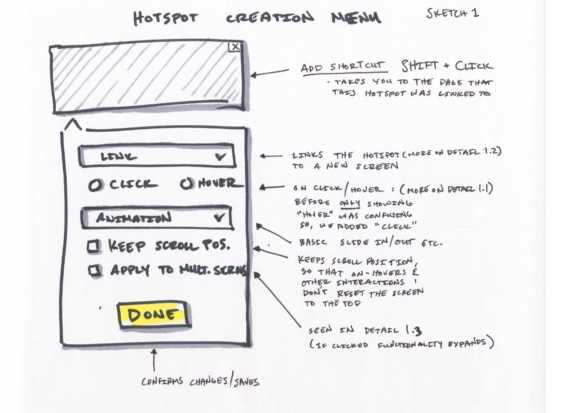
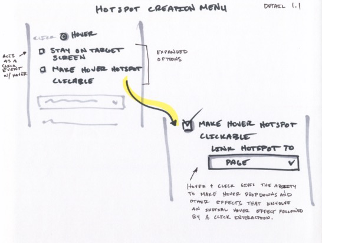
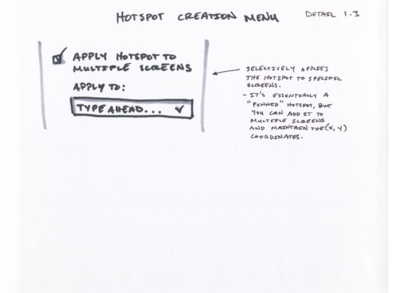

What is Notable Prototypes?
To preface this case study: Notable is a design collaboration platform that features a prototyping tool that uses images in conjunction with hotspots. We had been getting complaints from customers about usability issues and then finally our designers who were using the product internally would use outside prototyping tools instead of our own because it slowed them down. This is a story of how we solved the problem.
Prototype Creation was Slow
For this project, we had a one week time frame to conduct user testing, get feedback, sketch it out then work with an engineer to implement and push out the code. The goal was "simple", make Notable's prototyping tool faster. It was a wild ride, but we produced some pretty amazing results!
User Testing: Prototype Creation
Prototyping creation had five steps to get from nothing to a fully finished prototype. The results that followed from our user testing sessions were pretty telling. The majority of the designers couldn't actually finish the whole wizard within a 30 minute time frame.
Five Step Wizard:
- Upload Screen
- Creation
- Feedback Type
- Open or Closed
- Finalize and Name
Reported/Observed Issues
- Pinned hotspots weren't selective, it was either all or nothing.
- Preview function was slow and took forever to load, it also opened a new tab.
- onHover effects weren't clickable, which was frustrating when making dropdown menus.
- It was hard to find the correct screen when leafing through 50+ images. No search or thumbnail previews available.
- Assuming that the default interaction was onClick was confusing, "pin" was mistaken as the onClick interaction by the testers.
- It was impossible to create mid-page menus since an interaction would load a new page and reset it to the top.
- There was no quick way to "keep your place" while going through and making user flows.
We reasoned that finishing the actual creation within a reasonable amount of time would derive the most value. With our limited development availability, we decided to focus specifically on the hotspot menu.
Synthesized basic takeaways into sketches
From there, we were going from sketches into the build phase. The styles were already existent, it was just a matter of getting the interface right. In these sketches we figured out some of the main interactions and mapped them out to discuss feasibility with the engineer before getting married to any features. Luckily, we were good to go!
- Sketch 1
- Detail 1.1
 Detail 1.2
Detail 1.2- Detail 1.3
Wrap-up
Once we pushed the changes I pointed out above, the same designer who had initially timed the prototyping took another shot at it. He clocked in at parity with InVision, which was a huge win! Overall, the sprint was a success, so we relayed a video of the changes to our customers.